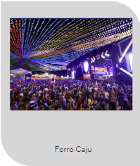
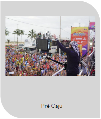
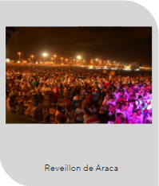

Os Grandes Eventos de Sergipe
Por: Fulano Bla bla bla, ultima edição 23/09/2023
Sergipe, conhecido por sua rica cultura e tradições, é palco de diversos eventos que atraem
milhares de turistas todos os anos. A combinação da hospitalidade sergipana, música envolvente e culinária
deliciosa faz desses eventos momentos inesquecíveis para quem tem a oportunidade de vivenciá-los. Três
festividades, em particular, destacam-se no calendário cultural do estado:
Forró Caju:
Realizado tradicionalmente no mês de junho, o Forró Caju é considerado um dos maiores festivais de São João do
Brasil. O evento ocorre no centro de Aracaju e reúne grandes nomes do forró, do tradicional ao eletrônico. Além
das apresentações musicais, o Forró Caju oferece uma vasta programação cultural, que inclui apresentações de
quadrilhas juninas, barraquinhas com comidas típicas e um ambiente decorado que remete ao interior nordestino. O
festival celebra a cultura popular, promovendo a integração entre os sergipanos e os visitantes.
Pré-Caju:
O Pré-Caju é uma espécie de "aquecimento" para o Carnaval e ocorre, geralmente, na segunda quinzena de janeiro.
O evento é uma grande micareta que atrai foliões de várias partes do país. Durante três dias, os trios elétricos
percorrem a Avenida Beira Mar, levando alegria e muita música. Artistas renomados do axé, sertanejo, forró e
outros ritmos garantem a animação da festa. Além da música, o Pré-Caju é famoso pelos blocos temáticos e pelos
abadás coloridos que enchem as ruas de cor e energia.
Réveillon de Aracaju:
A virada do ano em Aracaju é celebrada em grande estilo. A Orla de Atalaia, um dos cartões-postais da cidade,
torna-se palco de uma festa grandiosa que reúne sergipanos e turistas. Com uma queima de fogos espetacular e
shows de artistas locais e nacionais, o Réveillon de Aracaju é uma experiência memorável. A atmosfera de
celebração, combinada com a brisa do mar e o cenário deslumbrante, faz da passagem de ano na capital sergipana
um momento de renovação e alegria.
Estes eventos, além de promoverem a cultura e as tradições sergipanas, impulsionam o turismo e a economia local.
Eles refletem a alma festiva do povo sergipano, que, com sua alegria contagiante, sabe como ninguém celebrar a
vida e as boas energias que cada festividade traz. Seja dançando forró, seguindo um trio elétrico ou celebrando
a chegada de um novo ano, em Sergipe, a festa nunca termina.


